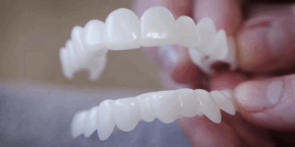
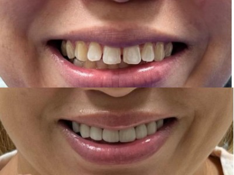

"Χαμογέλασε για να κερδίσεις: Πώς να γίνεις σούπερ σταρ με μια καινοτόμο μέθοδο"
Στο κόκκινο χαλί διαφόρων κινηματογραφικών φεστιβάλ, τα εκθαμβωτικά χαμόγελα των ξένων celebrities αστράφτουν πιο λαμπερά από τα διαμάντια. Τα μάτια όλου του κόσμου είναι καρφωμένα πάνω τους και δεν έχουν το δικαίωμα να φαίνονται άσχημα. Τα περισσότερα "αστέρια" δεν γεννήθηκαν με τέλεια χαμόγελα, επομένως πρέπει να ξοδέψουν περιουσίες σε οδοντιατρικές υπηρεσίες.
Ένα εκθαμβωτικό χαμόγελο είναι διαθέσιμο μόνο σε διασημότητες; Σαφώς και όχι! Αν σας έλεγα ότι υπάρχει ήδη μια επαναστατική λύση στα προβλήματα του χαμογελού σας; Σε αυτό το άρθρο, θα μιλήσουμε για αυτή την καινοτομία στον τομέα των οδοντιατρικών υπηρεσιών! Αλλά πρώτα, ας δούμε πώς άλλαξαν οι ζωές των ηρώων μας, μαζί με την αλλαγή στο χαμόγελό τους.
Κριστιάνο Ρονάλντο (Cristiano Ronaldo) Ο διάσημος Πορτογάλος ποδοσφαιριστής Cristiano Ronaldo κάποτε δεν είχε τη δυνατότητα να ασχολείται την εμφάνισή του. Αλλά, έχοντας επιτύχει την παγκόσμια αναγνώριση και την αναρρίχηση στον ποδοσφαιρικό Όλυμπο, ο Cristiano Ronaldo σκεφτόταν το πώς φαίνεται στα μάτια των άλλων. Ο οδοντίατρος έκανε εξαιρετική δουλειά στο χαμόγελό του. Τα δόντια του Cristiano Ronaldo (στα νιάτα του) ήταν ατελή: πολύ μικρά για το πρόσωπό του, θαμπό χρώμα, και το πιο σημαντικό, μεταξύ των «κεντρικό τομέα» και των «πλάγιο τομέα» δοντιών - υπήρχε ένα μεγάλο διάστημα (κενό).

Βικτόρια Μπέκαμ (Victoria Beckham) Η διάσημη Αγγλίδα σχεδιάστρια μόδας Victoria Beckham έγινε γνωστή χάρη στο γυναικείο μουσικό σχήμα Spice Girls. Κάποτε της άρεσε πολύ να χαμογελάει και σήμερα μπαίνει συχνά στην βαθμολογία των πιο αγέλαστων (σκυθρωπόν) διασημοτήτων. Προηγουμένως, το χαμόγελο της Victoria Beckham, για να το θέσω ήπια, δεν ήταν τέλειο: η διάσημη σχεδιάστρια είχε μια σειρά από ανομοιόμορφα δόντια, επιπλέον, στα νιάτα, είχε ένα κενό ανάμεσα στα μπροστινά της δόντια.

Μάικ Τάισον (Mike Tyson) Πολλά χρόνια πυγμαχίας για τον Mike Tyson δεν θα μπορούσαν παρά να επηρεάσουν την εμφάνισή του. Πολλοί πυγμάχοι έχουν φτιάξει χρυσά δόντια για να γιορτάσουν την επιτυχία τους μετά από έναν αγώνα. Ο Mike Tyson δεν αποτελεί εξαίρεση. Αφού ο Mike Tyson αποσύρθηκε από την πυγμαχία, έπρεπε να σκεφτεί να αλλάξει την εικόνα του. Επιπλέον, προσκλήθηκε να πρωταγωνιστήσει στην ταινία "The Hangover", για τον ρόλο στον οποίο ο Mike Tyson αποφάσισε να απαλλαγεί από τα χρυσά του δόντια και να τα αντικαταστήσει με κεραμικές στεφάνες. Όμως ο πρώην πυγμάχος άφησε το σήμα κατατεθέν του μεσοδόντιο κενό του ως επαγγελματική κάρτα.
Μάιλι Σάιρους (Miley Cyrus) Η ηθοποιός και τραγουδίστρια Miley Cyrus έφτιαξε το χαμόγελό της, όταν μόλις ξεκινούσε το αστρικό της ταξίδι. Όταν μια διασημότητα χαμογέλασε, το πάνω χείλος της ανασηκώθηκε πάρα πολύ και αποκάλυψε τα ούλα της. Στην τηλεοπτική σειρά "Hannah Montana", το χαμόγελο της Miley Cyrus έχει αλλάξει αισθητά: τα ούλα δεν ξεχωρίζουν τόσο πολύ και τα δόντια έχουν γίνει πιο λευκά και λεία. Ωστόσο, σήμερα είναι πολύ δύσκολο να αναγνωρίσεις την τωρινή Miley Cyrus σε εκείνο το άτακτο κορίτσι. Τα μπροστινά της δόντια καλύπτονται με όψεις πορσελάνης και οι κοπτήρες διορθώθηκαν για πιο αρμονική εμφάνιση.

Τομ Κρουζ (Tom Cruise) Ο διάσημος Αμερικανός ηθοποιός, σκηνοθέτης και παραγωγός Tom Cruise ξεκίνησε την κινηματογραφική του καριέρα το 1981. Τώρα το κοινό βλέπει τον Tom Cruise με ένα όμορφο χαμόγελο, αλλά δεν ήταν πάντα έτσι. Μέχρι την ηλικία των 16 ετών, υπήρχαν αρκετά γεμίσματα στο στόμα της διασημότητας, ήταν και στραβά, όχι όλα, αλλά μόνο τα μπροστινά, είχαν σκουριάσει λόγω της αφαίρεσης των νεύρων.
Είναι γνωστό ότι ο Tom Cruise υπέμεινε μακροχρόνιες και δαπανηρές διαδικασίες, συμπεριλαμβανομένης της τοποθέτησης στεφάνων και εμφυτευμάτων. Μέχρι την ηλικία των 40 ετών, ο ηθοποιός αναγκαζόταν να φοράει σιδεράκια, αφαιρώντας τα κατά τη διάρκεια των γυρισμάτων σε ταινίες και για κοσμικά πάρτι. Ωστόσο, το αποτέλεσμα άξιζε τον κόπο.

Οι αστέρες και οι προσωπικότητες του Χόλιγουντ προσπαθούν πάντα να έχουν τέλεια εμφάνιση και το χαμόγελό τους δεν αποτελεί εξαίρεση. Είναι πρόθυμοι να βάλουν μεγάλα χρηματικά ποσά στα δόντια τους, για να λάμψουν στα κόκκινο χαλί και στις φωτογραφίσεις. Ωστόσο, για πολλούς απλούς ανθρώπους, τέτοια έξοδα είναι δυσβάσταχτα.
Αλλά μην απελπίζεστε! Στον κόσμο της οδοντιατρικής καινοτομίας, υπάρχει μια επαναστατική λύση διαθέσιμη σε όλους - αφαιρούμενοι καπλαμάδες. Πρόκειται για λεπτά πλαστικά καλύμματα που φοριούνται στην μπροστινή επιφάνεια των δοντιών, δίνοντάς τους τέλειο σχήμα, ευθυγράμμιση και λευκότητα.
Οι αφαιρούμενοι καπλαμάδες προσφέρουν μια καταπληκτική ευκαιρία να μεταμορφώσετε το χαμόγελό σας χωρίς την ανάγκη των εκτεταμένων και δαπανηρών διαδικασιών, που απαιτούν πολύ χρόνο και χρήμα. Μπορούν να κρύψουν τα προβλήματα των δοντιών, όπως οι ανομοιομορφίες, οι λεκέδες ή οι ατέλειες στα δόντια σας και να δώσουν στο χαμόγελό σας μια αισθητική λάμψη, που φαίνεται ανέφικτη.
Αυτοί οι αφαιρούμενοι καπλαμάδες προσφέρουν αξεπέραστη ευελιξία, τοποθετούνται και αφαιρούνται εύκολα, επιτρέποντάς σας να αλλάξετε το χαμόγελό σας ανάλογα με την κατάσταση και τη διάθεση.

Έτσι, χάρη στους αφαιρούμενους καπλαμάδες, το τέλειο χαμόγελο είναι πλέον διαθέσιμο ΟΧΙ ΜΟΝΟ σε διασημότητες. Σε όλους δίνεται η ευκαιρία να πραγματοποιήσουν το όνειρο ενός εκθαμβωτικού χαμόγελου, παρά τον περιορισμένο προϋπολογισμό. Οι αφαιρούμενοι καπλαμάδες έχουν γίνει μια πραγματική ανακάλυψη στην οδοντιατρική, φέρνοντας ομορφιά και αυτοπεποίθηση σε κάθε χαμόγελο, είτε στο κόκκινο χαλί είτε στην καθημερινή ζωή.
Έτσι, οι αφαιρούμενοι καπλαμάδες είναι η καλύτερη οικονομική λύση για όσους ονειρεύονται ένα όμορφο χαμόγελο. Εκδημοκρατίζουν την πρόσβαση στην οδοντιατρική περίθαλψη, προσφέροντας σε όλους την ευκαιρία να δημιουργήσουν ένα εκθαμβωτικό χαμόγελο, χωρίς το εξωφρενικό κόστος. Ανεξάρτητα από τον προϋπολογισμό, ο καθένας μπορεί να νιώσει "αστέρι του Χόλιγουντ" και να βιώσει την αυτοπεποίθηση που φέρνει ένα τέλειο χαμόγελο.

Η αγορά των αφαιρούμενων καπλαμάδων είναι η καλύτερη επένδυση στον εαυτό μου! Τους αγόρασα στο πλαίσιο του προγράμματος, δεν περίμενα πολλά, αλλά αποδείχτηκε ότι ήμουν λάθος. Η ποιότητα είναι εξαιρετική, δεν ενοχλούν στο στόμα, συνηθίζονται γρήγορα, τοποθετούνται εύκολα. Προτείνω ανεπιφύλακτα!
Κατά τη γνώμη μου, οι αφαιρούμενοι καπλαμάδες SwissDent – είναι η καλύτερη εφεύρεση στην οδοντιατρική. Δεν πονάς, δεν φοβάσαι - και σε λίγα λεπτά, έχετε τέλεια δόντια.
Ποιος παρήγγειλε συγκεκριμένα αυτούς τους καπλαμάδες, μοιραστείτε την εμπειρία σας; Είχα παραγγείλει κινέζικα, ήταν απλά ένας εφιάλτης...
Θανάση, τους χρησιμοποιώ εδώ και τρεις μήνες, είναι σούπερ, προφανώς δεν είναι κινέζικα... Λεπτά, δεν σκουραίνουν, μπορείτε να πιείτε καφέ και κρασί, δεν ενοχλούν καθόλου. Φαίνονται πολύ φυσικά στο στόμα σας, όλοι οι φίλοι μου πιστεύουν ότι έχω βάλει κεραμικούς καπλαμάδες. Συνιστώ ανεπιφύλακτα τους SwissDent, ειδικά τώρα με το προνομιακό πρόγραμμα!
Είναι το ιδανικό προϊόν που πρέπει να αγοράσουν όλοι, όσοι είναι δυσαρεστημένοι με τα δόντια τους! Έχω πολύ σκούρο και πολύ λεπτό σμάλτο, γι'αυτό δεν μπορώ να κάνω λεύκανση. Σκέφτηκα να βάλω κεραμικούς καπλαμάδες, αλλά αυτό καταστρέφει τα δόντια σου. Μελέτησα πολύ ποια θα μπορούσε να είναι μια εναλλακτική λύση και επέλεξα τους SwissDent και δεν το μετάνιωσα ποτέ.
Δουλεύω σε αντιπροσωπεία αυτοκινήτων, το χαμόγελο είναι το παν για μένα. Αλλά έχω τερηδόνα, γιατί μεγάλωσα σε μια πόλη όπου το νερό είναι κορεσμένο με φθόριο. Πήγα στον γιατρό για να κάνω φθορίωση και λεύκανση στα δόντια μου, αλλά με απέτρεψαν, είπαν ότι οι λεκέδες θα φαίνονται έτσι κι αλλιώς. Άρχισαν να με πείθουν να βάλω καπλαμάδες, αλλά η τιμή είναι υπερβολικά υψηλή, δεν βγάζω τόσα πολλά. Αποφάσισα να δοκιμάσω τους αφαιρούμενους καπλαμάδες, επέλεξα τους SwissDent και δεν έχασα. Ταιριάζουν τέλεια, άριστη ποιότητα. Φαίνονται καταπληκτικά!
Δουλεύω και γω με ανθρώπους. Προσπαθώ να πηγαίνω τακτικά στον οδοντίατρο, κάνω λεύκανση και καθαρισμό. Και πρόσφατα παρατήρησα ότι τα δόντια μου έχουν γίνει ευαίσθητα, ο γιατρός είπε ότι δεν μπορεί πλέον να γίνει άλλη λεύκανση και μου πρότεινε τους SwissDent ως εναλλακτική λύση. Αμφιβάλλω, σκέφτηκα ότι θα ήταν πολύ άβολο και θα επηρεάζεται η ομιλία μου. Αλλά και πάλι αποφάσισα να δοκιμάσω, γιατί η τιμή για αυτούς είναι χαμηλότερη από ό,τι για τον τακτικό καθαρισμό. Όλοι οι φόβοι μου αποδείχθηκαν αβάσιμοι. Είναι πολύ λεπτοί, οπότε δεν τους νιώθεις καν, αλλά ταυτόχρονα είναι πολύ ανθεκτικοί, δεν αλλάζει η αφή, δεν σκουραίνουν με τον καιρό, ούτε από τον καφέ ούτε από το τσιγάρο. Έχουν σφιχτό και σταθερό κράτημα, μπορείς να τους φοράς όλη μέρα και να τρως μ'αυτούς. Τα υλικά είναι υψηλής ποιότητας. Είναι πολύ εύκολο να τους φροντίσεις. Οπότε είμαι πολύ ευχαριστημένη με την αγορά.
Ονειρευόμουν από καιρό να κάνω το χαμόγελό μου αισθητικά όμορφο. Τα πάνω δόντια ήταν άσχημα, με σφραγίσματα, που με την πάροδο του χρόνου σκουραίνουν και αλλοιώνουν την όψη των δοντιών. Γενικά, τον τελευταίο καιρό ντρέπομαι να χαμογελάσω και θα βάλω στόχο, οπωσδήποτε, να εξοικονομήσω χρήματα για όμορφα δόντια, αφού όλο αυτό είναι μια πολύ ακριβή απόλαυση. Εν τω μεταξύ, αγόρασα τους SwissDent και είμαι πολύ ικανοποιημένη, τώρα χαμογελάω χωρίς δισταγμό.
Μπορείτε να μου πείτε αν είναι κατάλληλοι για όλους; Και σε πόσες μέρες γίνεται η παράδοση;
Βιβή, οι SwissDent έχουν ένα καθολικό μέγεθος. Και παράδοση γίνεται από 1 έως 3 εργάσιμες ημέρες, πληρώνετε τον courier κατά την παραλαβή του προϊόντος.
Ξένια, δηλαδή μπορώ να τους παραγγείλω και για μένα και για τον άντρα μου;
Βιβή, ναι, εγώ ακριβώς αυτό έκανα.
Πήρα τους καπλαμάδες πριν μια εβδομάδα. Δεν έχω ίσια δόντια, όμως δεν θέλω να βάλω σιδεράκια, φαίνεσαι σαν χαζό με αυτά. Τώρα έχω χαμόγελο, σαν τα αστέρια του Χόλιγουντ! Ίσια και λευκά δόντια. Δεν έχω κανένα πρόβλημα, γι'αυτό χαμογελώ πλατιά).
Παρήγγειλα και γω τους αφαιρούμενους καπλαμάδες. Η παράδοση είναι πολύ γρήγορη, μόνο 2 ημέρες. Δεν έχετε ιδέα πόσο ωραίο είναι να έχεις ένα τέλειο χαμόγελο!
Παρήγγειλα τους αφαιρούμενους καπλαμάδες για τον εαυτό μου, πρέπει να παραδοθούν αύριο. Έχω πελεκημένα τα μπροστινά μου δόντια, ο σύμβουλος είπε ότι θα κρύψουν τα ελαττώματα μου.
Ανδρέα, θέλω να δω το αποτέλεσμα. Έχω το ίδιο πρόβλημα με σένα, θέλω πολύ να δοκιμάσω, αλλά φοβάμαι!
Γωγώ, Ιδού… Είμαι πολύ ευχαριστημένος. Παραγγείλετε, μην φοβάστε!
Μην χάνετε το χρόνο σας κορίτσια. Έκανα ήδη λεύκανση 10 φορές και ό,τι άλλο είναι δυνατό, και δεν έχω ακόμη τέλεια δόντια. Φοράω αυτούς τους καπλαμάδες περισσότερο από ένα χρόνο, και μόνο κομπλιμέντα ακούω) Είμαι πολύ ευχαριστημένη!
Η πεθερά μου αγόρασε αυτούς τους καπλαμάδες. Πόσο όμορφοι είναι))) Πραγματικά σαν το χαμόγελο του αστέρα Χόλιγουντ. Δείχνει νεότερη.) Παρήγγειλα κι εγώ!
Φοράω τους αφαιρούμενους καπλαμάδες εδώ και 4 μήνες και δεν έχουν αλλάξει καθόλου χρώμα και σχήμα, φαίνονται πολύ φυσικά. Έχω άσχημα δόντια, με λεκέδες, ένα βγαίνει μπροστά και ένα κενό ανάμεσα στα δόντια μου. Η μαμά μου έλεγε πάντα ένα τόσο όμορφο κορίτσι, αλλά πρέπει να κάνεις κάτι με τα δόντια σου. Όμως δεν έχω χρήματα και φοβάμαι τους οδοντιάτρους. Παρήγγειλα τους SwissDent. Τελικά μου φαίνεται, τα όμορφα δόντια αλλάζουν κάθε άτομο!